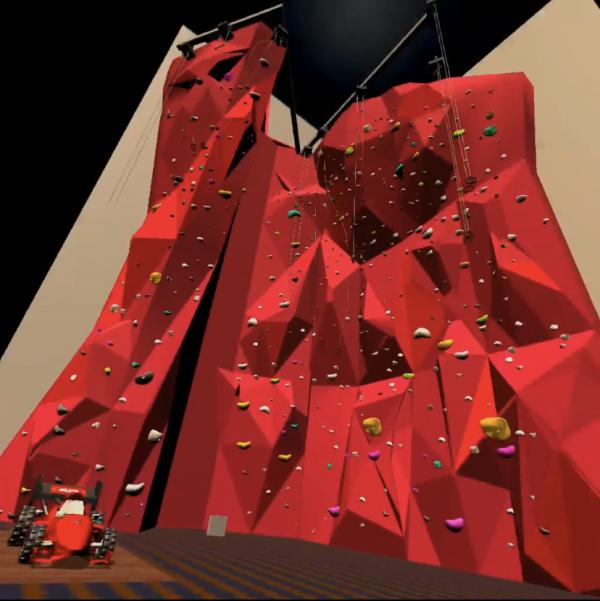
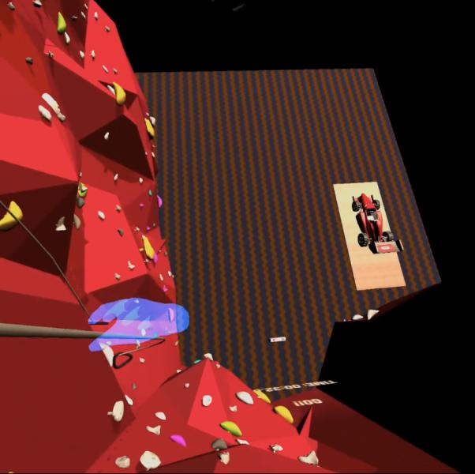
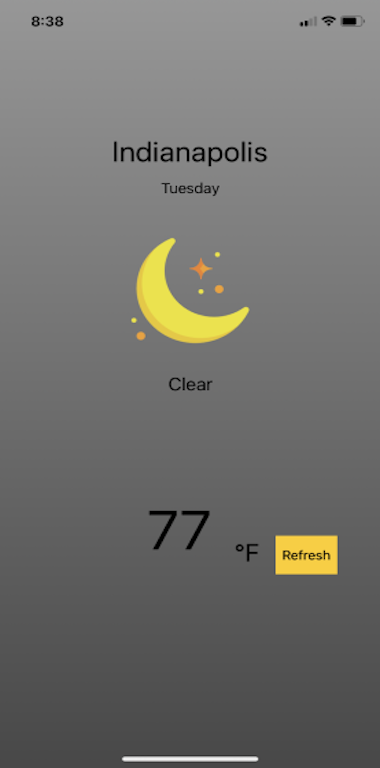

Mapbox
Increased application scalability by:
- Completing geoJSON data conversion.
- Implemented mapbox spotclustering for 20,000+ skate spots internationally.
- Data filtering allowing for robust search functionality.
- Implementation of an SVG loading indicator animation.
- Search by address feature.
- GeoLocate users functionality.
- Link spot details pages.

PHP - Codeigniter 3.0 - MySQL- Bootstrap
Digital download E-Commerce application for guitar tabs(PDF), featuring user authentication as well as Stripe integration for payment processing.
Micro-service: Stripe.

Node.js - Express - Three.js
Three.js galaxy prototyping application using dat.gui and three.js particle systems. dat.gui sliders allow for easy user customizations. Select size of the particles, add additional branches, change colors and more.
Bundler: Webpack.


Riley Kitchen Cook
Unity - XR Interaction Toolkit - Oculus Quest 2
Virtual reality game in association with Riley Children's Hospital. As part of a 4 person team, we were tasked to create an immersive physical therapy prototype for patients at the hospital. I served as the game programmer and Unity developer on this awesome experience.
Unity - XR Interaction Toolkit - Oculus Quest 2
Virtual reality game in association with Riley Children's Hospital. As part of a 4 person team, we were tasked to create an immersive physical therapy prototype for patients at the hospital. I served as the game programmer and Unity developer on this awesome experience.

Mobile - iOS - Swift.
This is a mobile iOS application built using Swift. It features device location using CoreLocation, API request with AlamoFire, parsing JSON data using SwiftyJSON and lastly, a loading indicator using NVActivityIndicatorView.

ARFoundation - Unity.
This is a GPS location-based augmented reality game using Mapbox, alongside ARFoundation in Unity. Open the map to see where respective points of interest are (donuts). Upon colliding with a point of interest in real life, you will be prompted to start the AR Coffee Break Game! The game requires the user to scan the ground for plane detection, then dounts begin to rain down from a cloud with particles. The user runs around within the area attempting to catch the falling donuts.


Node.js - Express - Three.js
Three.js Application depicting a haunted kitchen scene. Lights flicker using specified timeouts. Additionally, the ghosts (lights) periodically float above/below the floor following a sine-wave pattern.
Bundler: Webpack.

Node.js - Express - Three.js
Generate a starfield in your room. See the power of webXR on your Android device through the ARCore technology. This project uses Three.js and webXR to create this expirence. If you would like to view on a iOS device, you may download The Mozilla WebXR Viewer and paste the site url.
Bundler: Webpack.

Node.js - Express - Three.js
Own a virtual reality headset? Load the site url in your headset browser and expirence the immersive starfield expirence though the webXR API. Three.js and webXR are used to create this expirence.
Bundler: Webpack.

PWA application - Ionic Angular.
Generatates a random recipe from theMealDB API.

PWA Application - Ionic Angular.
Leaflet blog inspired CRUD application, using Firebase Authentication alongside firestore nested collections.

PWA Application - Ionic Angular.
Tennis inspired social media application using Firebase authentication, firestore and firestorage.

Node.js - Express - SASS
This site takes a zipcode and displays weather information using the weatherapi.com API.
Shopify
Shopify site for personalized clothing designs.


PWA Application - Ionic Angular.
RedditGifs is an application that pulls gifs from a Reddit thread using the Reddit API. By default it uses the "populargifs" subreddit, however another fun subreddit to search for is "perfectloops". Tap the video to start/stop the gif.